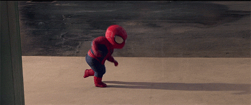
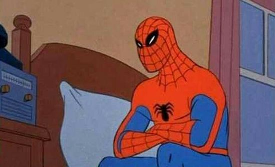
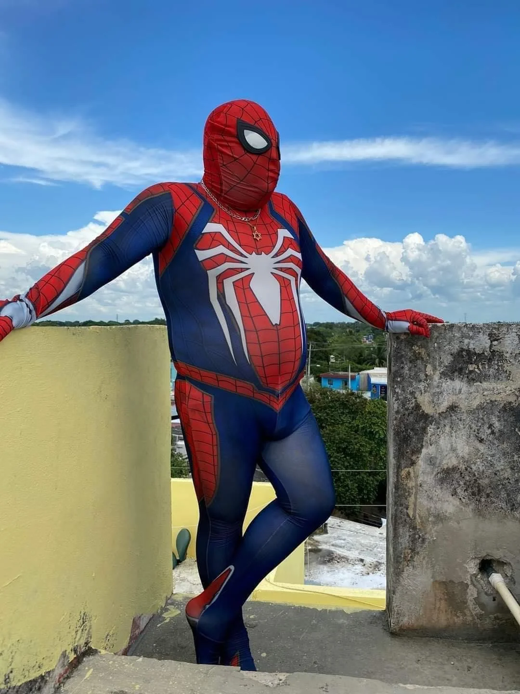
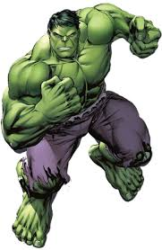
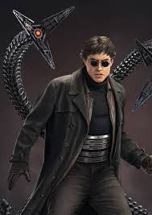
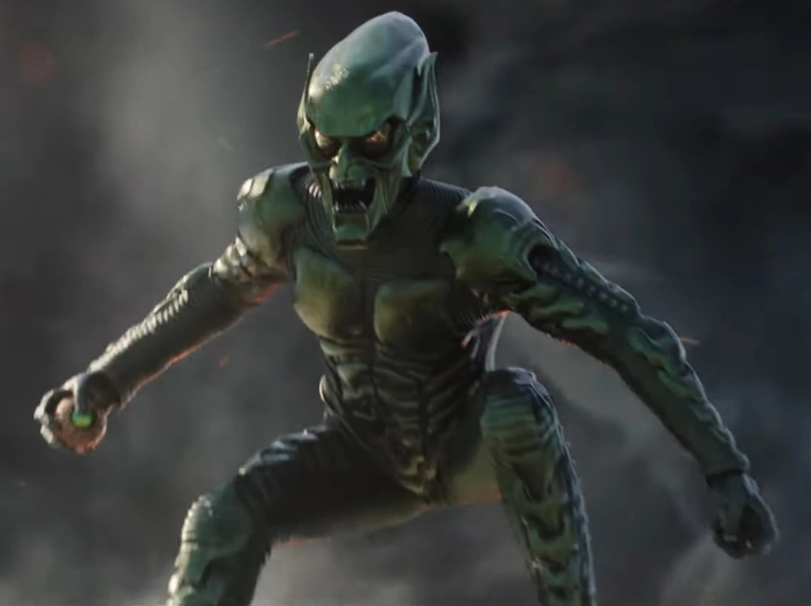
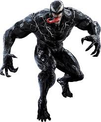

Homem aranha é visto dançando
Ele dança demais.
Homem aranha é visto pensativo
Minha nossa.
Spiderman
Caramba o céu está lindo
Curiosidades do Homem Aranha
O Homem-Aranha foi levemente inspirado na personagem das histórias pulp The Spider (O Aranha), protagonista de vários contos. Diferente de todos os super-heróis da época, porém, Peter Parker foi desenvolvido por Lee e Ditko como um adolescente comum e não o tradicional herói imponente e musculoso.
Aliados
capitão america

Capitão América é um super-herói de histórias em quadrinhos americanos publicado pela Marvel Comics. Criado por Joe Simon e Jack Kirby, o primeiro personagem apareceu em Captain America Comics # 1 (março de 1941) da Timely Comics, antecessora da Marvel Comics.
Hulk
Hulk, por vezes referido como O Incrível Hulk (The Incredible Hulk, no original em inglês), é um personagem de quadrinhos/banda desenhada do gênero super-herói, propriedade da Marvel Comics, editora pela qual as histórias do personagem são publicadas desde sua criação, na década de 1960. Concebido pelo roteirista Stan Lee (1922–2018) e pelo desenhista Jack Kirby (1917–1994)
Homem de Ferro

Homem de Ferro (Iron Man) é um personagem dos quadrinhos publicados pela Marvel Comics. Sua verdadeira identidade é o empresário e bilionário Tony Stark, que usa armaduras de alta tecnologia no combate ao crime. Foi criado em 1963 pelo escritor Stan Lee, o roteirista Larry Lieber e os desenhistas Jack Kirby e Don Heck.
Vilões
Doctor octopus
Doutor Octopus (alter ego do Dr. Otto Gunther Octavius) é um personagem de quadrinhos da Marvel Comics, um supervilão que é um dos arqui-inimigos do Homem-Aranha. Criado pelo roteirista Stan Lee e o artista Steve Ditko, o personagem apareceu pela primeira vez em The Amazing Spider-Man #3 (julho de 1963)
Duende verde
O Duende Verde é o alter-ego de Norman Osborn, um supervilão fictício que aparece nas histórias em quadrinhos norte-americanas publicadas pela Marvel Comics. O personagem foi criado pelo escritor Stan Lee e pelo artista Steve Ditko, aparecendo pela primeira vez na revista The Amazing Spider-Man #14 (julho de 1964). O chefe industrial e amoral da Oscorp tomou uma fórmula que aprimorou as suas capacidades físicas e seu intelecto, mas também o levou à loucura.
Venom
Venom é um personagem ficcional das histórias em quadrinhos na série do Homem-Aranha do Universo Marvel, publicadas pela Marvel Comics. Apesar de já ter tido minisséries próprias, a maioria de suas aparições é como inimigo do personagem Homem-Aranha. Apesar de ter seu lado como vilão, Venom também é um anti-herói. Seu hospedeiro é Eddie Brock.